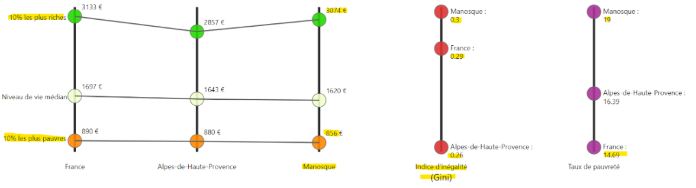
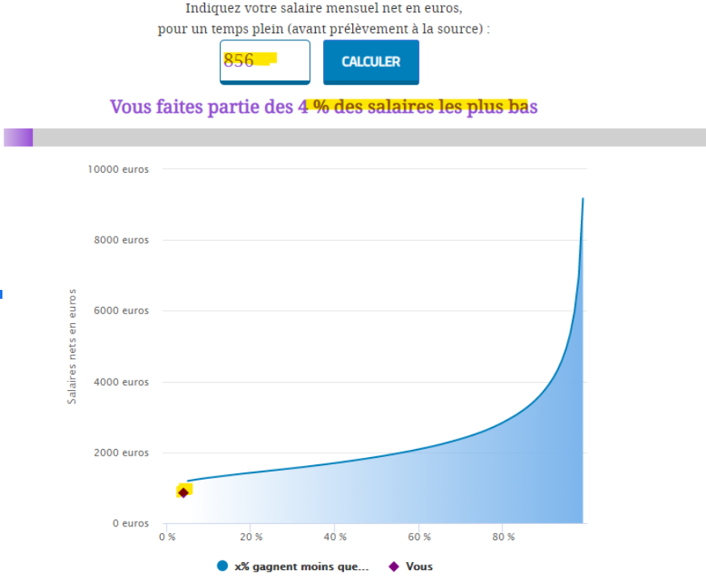

- Augmentation de l’effectif de la police municipale
- Lutter contre toutes les discriminations et garantir l’égalité des droits ; toute discriminations doit être punie, et nous devons éduquer nos plus jeunes à respecter son prochain ! C’est pour cela que nous prévoyons un petit budget pour la mise en place de prévention, aux conséquences et aux dégâts. - > Cours d’EMC dès l’école primaire pour permettre aux plus jeunes de devenir citoyens.
- Améliorer et développer le réseau de caméras de vidéosurveillance de la ville.
- “Opération tranquillité vacances”
- Développer des association pour le développement intellectuelle et pro des jeunes ouvrire plusieurs association dans l’objectif d’apporter un soutien, une occupation extrascolaire, que ca soit dans les nouvelles technologie ou dans la création artistique
- Nous croyons en notre jeunesse sportif ! Nous pensons que le FC Manosque est capable de beaucoup de prouesses et nous souhaitons ouvrir des centres de sport, afin de permettre aux personnes les plus défavorisées de se défouler pour une bonne cause.
- Grands événements sportifs : Tour de Provence, Tour de France, ...
- revitalisation du centre-ville : Marché de noël, Musik à Manosque (permet aux petits commerces d’avoir des retombées économiques), les correspondances, journées à thèmes,...
- (Tarifs parking, pour les grands événements et pour le cinéma,...).
- Manosque est une ville pauvre, comparée aux autres communes, nous voulons redistribuer les richesses, et réduire les inégalités économiques.
 Une personne en france, touchant 856 euro par mois fait partie de 4% des plus pauvres en france. autrement dit, 10% de notre population est dans cette situation
- La durance se pollue chaque année, c’est pour cela qu'il faut dès aujourd’hui prendre les bonnes mesures, pour entretenir notre ville
- Jardin communautaire : mettre à disposition un potager public et gratuit, permettant au personnes les plus défavorisées, ou ceux qui le souhaite, de récupérer les cultures, pour se nourrir. Seule contrainte, si on récolte, on re plante une graine pour en faire profiter les autres.
- Mise en place d’un circuit de recyclage des déchets : Calendrier avec ramassage des poubelles devant les maisons des gens, suivant le jour (lundi : carton, mercredi : plastique,...).
- Ajout de bennes pour recycler.
- Mise en place d'un menu végétarien dans les cantines des écoles publiques.
- Mise en place du “zéro gaspillage” dans les écoles.
- Création de “journées nettoyages” aux Vannades, parc de drouille, ...
- Mise en place du Conseil Municipal Jeunes.
- Chaque membre de la liste sera transparent sur ses activités professionnelles et ainsi éviter tout conflit d’intérêt.
- Création d’un Conseil Citoyen, pour que des citoyens de la ville de Manosque puissent donner leur avis.
- Mise en place d’une permanence des élus pour que les habitants puissent poser des questions directement aux élus.